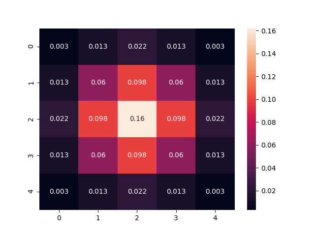
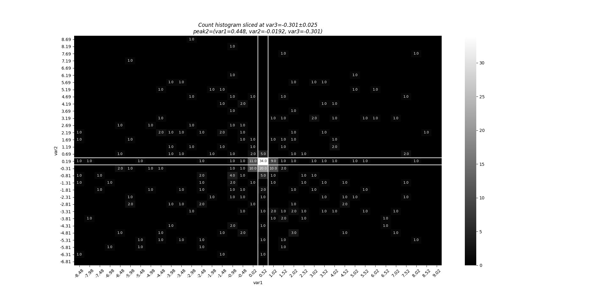
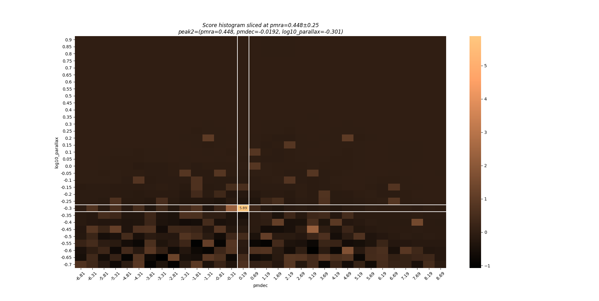
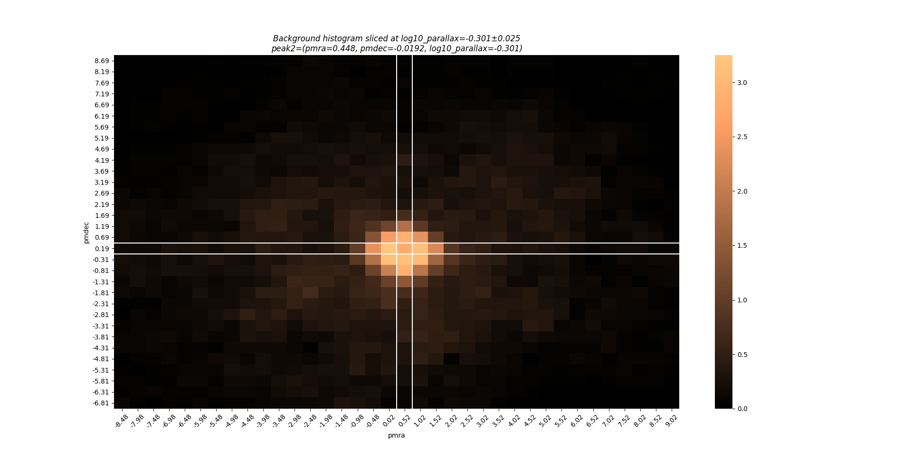

scludam.detection module
Module for density peak detection in numerical data.
This module provides density peak detection over numerical data and helper functions
for tasks such as defining filtering masks. The main API of
the module includes CountPeakDetector,
default_mask() and extend_1dmask(),
which can be direcly imported from scludam. Other functions and classes can be
imported from scludam.detection.
- scludam.detection.default_mask(dim: int)[source]
Create a default mean mask for a given dimension.
It returns a mean weighted mask with 5 elements per dimension, to be used as a filter for convolution. The sum of the mask weights is equal to 1.
- Parameters
dim (int) – Dimension of the mask.
- Returns
Array with the mask.
- Return type
NDArray[np.number]
Notes
The shape of the mask is chosen so it takes into account the values of neighboring bins, but not the value of the bin over which the mask is applied. The mask is intended to produce a good estimate of the local density of the background of the bin over which it is applied. This mask is used in the method applied by González-Alejo (2020) 1.
References
- 1(1,2)
Alejo, A.D., González, J.F., González, S. P. (2020). Estudio de membresı́a de cúmulos estelares utilizando Gaia DR2. Cuaderno de Resúmenes 62a Reunión Anual Asociación Argentina de Astronomía, Rosario, Provincia de Santa Fe, 64.
Examples
1from scludam import default_mask 2 3mask = default_mask(2) 4print(mask) 5# [[0. 0. 0.08333333 0. 0. ] 6# [0. 0.08333333 0.08333333 0.08333333 0. ] 7# [0.08333333 0.08333333 0. 0.08333333 0.08333333] 8# [0. 0.08333333 0.08333333 0.08333333 0. ] 9# [0. 0. 0.08333333 0. 0. ]]
- scludam.detection.fast_std_filter(data: ndarray[Any, dtype[ScalarType]], mask: Union[ndarray[Any, dtype[ScalarType]], List, Tuple], **kwargs)[source]
Fast standard deviation filter.
To be applied over an image or histogram.
- Parameters
data (NDArray) – Image or n-dimensional histogram.
mask (ArrayLike) – Mask to be used for the convolution.
- Returns
Filtered image or histogram of the same dimensions.
- Return type
NDArray
Notes
Is possible to pass kwargs to the
scipy.ndimage.convolvefunction. Its default border mode is ‘reflect’.
- scludam.detection.get_histogram_bins(data: ndarray[Any, dtype[number]][ndarray[Any, dtype[number]]], bin_shape: Union[ndarray[Any, dtype[number]][ndarray[Any, dtype[number]]], List[Number], Tuple[Number, ...]], offsets: Optional[Union[ndarray[Any, dtype[number]][ndarray[Any, dtype[number]]], List[Number], Tuple[Number, ...]]] = None)[source]
Get histogram bins and edges given a bin shape and data.
The method takes into account the data max and min values for each dimension and the bin shape to calculate the amount of bins and the edges to be used of an histogram. Half a bin is added to each extremum to avoid bins edges to be exactly on the data extremums.
- Parameters
data (Numeric2DArray) – Data to be used to get the histogram bins.
bin_shape (Numeric1DArrayLike) – Bin shape (each dimension) to be used.
offsets (OptionalNumeric1DArrayLike, optional) – Offsets to be added to the edges, by default
None
- Returns
Number of bins and edges.
- Return type
(Numeric1DArray, Numeric2DArray)
- scludam.detection.histogram(data: ndarray[Any, dtype[number]][ndarray[Any, dtype[number]]], bin_shape: Union[ndarray[Any, dtype[number]][ndarray[Any, dtype[number]]], List[Number], Tuple[Number, ...]], offsets: Optional[Union[ndarray[Any, dtype[number]][ndarray[Any, dtype[number]]], List[Number], Tuple[Number, ...]]] = None)[source]
Get a histogram given a bin shape and data.
Uses
get_histogram_bins()results to create a n-dimensional histogram.- Parameters
data (Numeric2DArray) – Data to be used.
bin_shape (Numeric1DArrayLike) – Bin shape (in each dimension) to be used.
offsets (OptionalNumeric1DArrayLike, optional) – Offsets to shift the edges of the histogram, by default
None
- Returns
Histogram and edges.
- Return type
(NDArray, NDArray)
- scludam.detection.nyquist_offsets(bin_shape: Union[ndarray[Any, dtype[number]][ndarray[Any, dtype[number]]], List[Number], Tuple[Number, ...]])[source]
Get offsets for shifting a histogram.
Get all possible offsets for a given bin shape, to be used to shift the histogram edges following the Nyquist spatial sampling interval. The offsets are calculated as the half of the bin shape.
- Parameters
bin_shape (Numeric1DArrayLike) – Bin shape (in each dimension).
- Returns
Array of shape (n_combinations, n_dimensions) with the possible offsets.
- Return type
Numeric2DArray
- scludam.detection.extend_1dmask(mask: Union[ndarray[Any, dtype[ScalarType]], List, Tuple], dim: int)[source]
Extend a 1-dimensional filtering mask to a n-dimensional mask.
From a numeric filtering 1D mask, the function uses the outer product to extend it to a n-dimensional one. The resulting mask is the combination of n 1D masks orthogonal to each other. The sum of the resulting mask is equal to 1.
- Parameters
mask (ArrayLike) – 1D mask to be extended.
dim (int) – Dimension of the mask to be extended to.
- Returns
Extended mask.
- Return type
NDArray
Examples
1import matplotlib.pyplot as plt 2import seaborn as sns 3from scipy.signal.windows import gaussian as gaus_win 4 5from scludam import extend_1dmask 6 7win = gaus_win(5, 1) 8print(win) 9# [0.13533528 0.60653066 1. 0.60653066 0.13533528] 10mask = extend_1dmask(win, 2) 11sns.heatmap(mask, annot=True) 12plt.show()
- class scludam.detection.DetectionResult(centers: ndarray[Any, dtype[number]][ndarray[Any, dtype[number]]] = array([], dtype=float64), sigmas: ndarray[Any, dtype[number]] = array([], dtype=float64), scores: ndarray[Any, dtype[number]] = array([], dtype=float64), counts: ndarray[Any, dtype[number]] = array([], dtype=float64), edges: ndarray[Any, dtype[number]][ndarray[Any, dtype[number]]] = array([], dtype=float64), offsets: ndarray[Any, dtype[number]][ndarray[Any, dtype[number]]] = array([], dtype=float64), indices: ndarray[Any, dtype[number]][ndarray[Any, dtype[number]]] = array([], dtype=float64))[source]
Bases:
objectResult of a detection run.
- Variables
centers (Numeric2DArray) – Centers of the detected peaks. Are calculated using sigma clipped median over the data delimited by the
edges.edges (Numeric2DArray) – Edges that delimit the data used to calculate the centers. It is taken as a bin shape in each direction, in each dimension.
scores (Numeric1DArray) – Scores of the detected peaks. The results are sorted by score in descending order.
counts (Numeric1DArray) – Number of data points in the bin that represents the peak.
sigmas (Numeric1DArray) – Sigma of the detected peaks. Currently arbitrarily set as the bin shape in each dimension.
offsets (Numeric2DArray) – Offsets used for detecting each peak.
indices (Numeric2DArray) – Indices of the detected peaks in the histogram.
- class scludam.detection.CountPeakDetector(bin_shape: Union[ndarray[Any, dtype[number]][ndarray[Any, dtype[number]]], List[Number], Tuple[Number, ...]], mask: Union[None, ndarray[Any, dtype[ScalarType]], List, Tuple] = None, nyquist_offset: bool = True, min_count: Number = 10, min_dif: Number = 10, min_sigma_dif: Optional[Number] = None, min_score: Number = 2, max_n_peaks: int = 10, min_interpeak_dist: int = 1, remove_low_density_regions: bool = True, norm_mode: str = 'std', offsets: Union[None, ndarray[Any, dtype[ScalarType]], List, Tuple] = None, last_result: Optional[DetectionResult] = None, data: Optional[ndarray[Any, dtype[number]][ndarray[Any, dtype[number]]]] = None)[source]
Bases:
objectCount peak detector class.
Uses an n-dimensional histogram (array) to detect density peaks in the input data.
- Variables
bin_shape (Numeric1DArrayLike) – Bin shape (in each dimension) to be used to create the histogram.
mask (OptionalArrayLike, optional) – Mask to be used as in the filtering operations, by default uses
default_mask()with data dimensions. The mask must have same dimensions as the data and its weights must sum to 1 and be appropriate for smoothing.nyquist_offsets (bool, optional) – If
True, the Nyquist spatial sampling interval is used to shift the histogram edges, by defaultTrue. It helps to underestimating the bin count due to an arbitrarily chosen bin edge shift. It usesnyquist_offsets().min_count (Number, optional) – Mimimum count for a bin to be elegible as a peak, by default 10. Also used to
remove_low_density_regionsif that option is enabled.remove_low_density_regions (bool, optional) – If
True, low density bins are removed from the histogram, by default True. It removes low density bins from the edges of the histogram, trimming down the region of interest and reducing the size of the histogram, which in turn reduces memory usage for sparse data. It uses themin_countvalue as the threshold. It also keeps bins that are in the neigborhood of a valid (dense) bin so the filtering operation can be applied to the remaining bins correctly. The neighborhood is defined by the size of themaskto be used for the filtering operations.min_dif (Number, optional) – Minimum difference between the background and the bin count for a bin to be elegible as peak, by default 10. The formula used is:
elegible if histogram - background > min_difwherebackgroundis obtained by using filtering the histogram with the providedmask.min_sigma_dif (Number, optional) – Sigma value to be used to calculate difference between the background and the bin count for a bin to be elegible as peak, by default
None(deactivated). The formula used is:elegible if histogram - background > min_sigma_dif*stdwherebackgroundis obtained by using filtering the histogram with the providedmask.stdrepresents the standard deviation in a window surrounding the bin, calculated according to thenorm_modeparameter.min_score (Number, optional) – Minimum score for a bin to be elegible as peak, by default 2. The score is calculated as the standardized difference between the bin count and the background:
score = (histogram - background) / stdwherebackgroundis obtained by using filtering the histogram with the providedmask.stdis calculated according to thenorm_modeparameter.max_n_peaks (Number, optional) – Maximum number of peaks to be detected, by default 10. Use
np.infto detect all peaks.min_interpeak_distance (int, optional) – Minimum number of bins between peaks, by default 1.
norm_mode (str, optional) –
Mode to be used to get the standard deviation used in the score calculation, by default “std”. Can be one of the following:
”std”: Standard deviation of the
histogram - backgroundcalculated using themaskprovided andfast_std_filter()”approx”: Approximation 1 to the standard deviation taking into account how the
sharp = histogram - backgroundis obtained.An common estimate of the standard deviation of an histogram is the root square of the bin count:
std(h) = sqrt(h).According to the uncertainty propagation: if
s = h - b, thenstd(s) = sqrt(var(h) + var(b) - 2*cov(h,b)).Considering
2*cov(h,b)~0, the approximation is:std(s) = sqrt(h + b).
Notes
The algorithm used is based in the following steps:
Remove the data corresponding to low density regions from the edges to the center, until a dense enough bin is found, as described in the
remove_low_density_regionsparameter.Calculate all possible offsets for the histogram edges, using the Nyquist spatial sampling interval. The region surveyed is subdivided into a rectilinear grid of overlapping hypercubes separated by half the side length of an individual bin 2 3 4.
Instead of creating one histogram including all possible offsets, which can be very large when dimensionality increases, an histogram is created for each possible offset. Per histogram, the following steps are preformed:
Estimate the background density, convolving the histogram with the provided
mask, smoothing the histogram over adjacent bins inside a window defined by the mask size 2 5 6.Calculate the excess of data points in each bin as the difference between the bin count and the background density. This is equivalent to applying a high-pass filter to the histogram. It should be noted that the excess count using this method can be poorly estimated, specially when the bin shape used is not appropriate.
Calculate the score of each bin as the normalized excess count, using the methods described in the
norm_modeparameter.Apply
min_count,min_sigma_dif,min_difandmin_interpeak_distanceconstraints and find peaks in the n-dimensional score histogram.
Take the peaks found in each shifted histogram and merge them into a a single list, taking only the higher score shift for each peak. The list is sorted in descending order by score.
The fundamental parameter of the method is
bin_shape. In general, the shape must be chosen as the span in each dimension of the object to be detected.References
- 2(1,2)
Schmeja, S. (2011). Identifying star clusters in a field: A comparison of different algorithms. Astronomische Nachrichten, 332, 172-184. doi: 10.1002/asna.201011484
- 3
Lada, E. A., Lada, C. J. (1995). Near-infrared images of IC 348 and the luminosity functions of young embedded star clusters. The Astrophysical Journal, 109.
- 4
Nanda Kumar, M. S., Kamath U. S., and Davis, C. J. (2004). Embedded star clusters in the W51 giant molecular cloud. Monthly Notices of the Royal Astronomical Society, 353, 1025–1034. doi:10.1111/j.1365-2966.2004.08143.x
- 5
Lada, E. A., DePoy, D. L., Evans, N. J. y Gatley, I. (1991). Micron survey in the LI630 molecular cloud. The Astrophysical Journal, 371, 171-182.
- 6
Karampelas, A., Dapergolas, A., Kontizas, E., Livanou, E., Kontizas, M., Bellas-Velidis, I. y Vílchez, J. M. (2009). Star complexes and stellar populations in NGC 6822: Comparison with the Magellanic Clouds. Astronomy and Astrophysics, 497, 703–711.
Examples
1import matplotlib.pyplot as plt 2import numpy as np 3from scipy.stats import multivariate_normal 4 5from scludam import CountPeakDetector 6from scludam.synthetic import ( 7 StarCluster, 8 StarField, 9 Synthetic, 10 UniformFrustum, 11 polar_to_cartesian, 12) 13 14# Generate some data 15np.random.seed(134) 16 17field_size = int(1e4) 18cluster_size = int(1e2) 19field = StarField( 20 pm=multivariate_normal(mean=(0.0, 0.0), cov=(20, 15)), 21 space=UniformFrustum(locs=(120.5, -27.5, 12), scales=(1, 1, -11.8)), 22 n_stars=field_size, 23) 24clusters = [ 25 StarCluster( 26 space=multivariate_normal( 27 mean=polar_to_cartesian([120.7, -28.5, 0.5]), cov=0.5 28 ), 29 pm=multivariate_normal(mean=(0.5, 0), cov=1.0 / 10), 30 n_stars=cluster_size, 31 ), 32 StarCluster( 33 space=multivariate_normal(mean=polar_to_cartesian([120.8, -28.6, 5]), cov=0.5), 34 pm=multivariate_normal(mean=(4.5, 4), cov=1.0 / 10), 35 n_stars=cluster_size, 36 ), 37 StarCluster( 38 space=multivariate_normal(mean=polar_to_cartesian([120.9, -28.7, 8]), cov=0.5), 39 pm=multivariate_normal(mean=(7.5, 7), cov=1.0 / 10), 40 n_stars=cluster_size, 41 ), 42] 43df = Synthetic(star_field=field, clusters=clusters).rvs() 44 45# Select the data to be used for the detection 46data = df[["pmra", "pmdec", "log10_parallax"]].values 47 48# Detect density peaks in the data 49detector = CountPeakDetector(bin_shape=[0.5, 0.5, 0.05]) 50result = detector.detect(data) 51print(result) 52# DetectionResult( 53# centers=numpy.ndarray([ 54# [4.536048743232476, 3.9186486456763276, 0.6994997601345216], 55# [7.538194372795517, 6.998371367057486, 0.9020709230859785], 56# [0.4479574532248377, -0.01917758842077178, -0.3009924913261566] 57# ]), 58# sigmas=numpy.ndarray([ 59# [0.5, 0.5, 0.05], 60# [0.5, 0.5, 0.05], 61# [0.5, 0.5, 0.05] 62# ]), 63# scores=numpy.ndarray([ 64# 6.9706701775336, 65# 6.627355856978734, 66# 5.886588680967625 67# ]), 68# counts=numpy.ndarray([35.21875, 24.71875, 31.21875]), 69# edges=numpy.ndarray([ 70# [ 71# [4.016260095931324, 5.016260095931324], 72# [3.1871460374559666, 4.187146037455967], 73# [0.6297442445624907, 0.7297442445624908] 74# ], 75# [ 76# [6.766260095931324, 7.766260095931324], 77# [6.437146037455967, 7.437146037455967], 78# [0.8047442445624906, 0.9047442445624907] 79# ], 80# [ 81# [-0.23373990406867584, 0.7662600959313242], 82# [-0.5628539625440334, 0.4371460374559666], 83# [-0.37025575543750955, -0.27025575543750957] 84# ] 85# ]), 86# offsets=numpy.ndarray([ 87# [0.0, 0.25, 0.0], 88# [0.25, 0.0, 0.025], 89# [0.25, 0.0, 0.0] 90# ]), 91# indices=numpy.ndarray([[27, 21, 28], [32, 28, 31], [18, 14, 8]]) 92# ) 93# Note: the above print is actually made with (https://pypi.org/project/prettyprinter/) 94 95# Plot the third peak found in pmra vs pmdec 96detector.plot(2) 97plt.show()
- detect(data: ndarray[Any, dtype[number]][ndarray[Any, dtype[number]]])[source]
Detect peaks in the provided data.
Uses the configuration provided in the class attributes.
- Parameters
data (Numeric2DArray) – Numerical data to be used.
- Returns
Instance containing the detected peaks.
- Return type
- Raises
ValueError – If
remove_low_density_regionsis used and no bin passes the density check, the min_count is probably too low.ValueError – If
data,bin_shapeandmaskdimensions do not match.
- Warns
UserWarning – If histogram has too few bins in some dimension, the filtering operations can still be applied but prone to border effects.
- plot(peak: int = 0, x: int = 0, y: int = 1, mode: str = 'c', cols: Optional[List[str]] = None, cut_label_prec: int = 4, center_label_prec: int = 4, **kwargs)[source]
Create a plot of the individual peaks detected.
Creates the plot using the result of the last
detect()call. Returns a custom seaborn heatmap plot. Passes any kwargs to the plot function. The heatmap is a two dimensional histogram slice, where x and y can be set, and the rest of dimensions are fixed in the peak center.- Parameters
peak (int, optional) – Index of the peak to be plotted in the result array, by default 0
x (int, optional) – Index of the variable that should be placed as the first dimension, by default 0
y (int, optional) – Index of the variable that should be placed as the second dimension, by default 1
mode (str, optional) – Histogram type, by default “c”. Can be one of:
“c”: Counts histogram.
“b”: Background histogram.
“e”: Excess histogram.
“s”: Score histogram.
The meaning of each histogram can be inferred from the method explained in
CountPeakDetector.cols (Union[[List[str]], None], optional) – List of variable names, by default
None. IfNone, then the variables are called ‘var1’, ‘var2’, and so on.cut_label_prec (int, optional) – Decimal places for the cut message in the title, by default 4.
center_label_prec (int, optional) – Decimal places for the center message in the title, by default 4.
- Returns
Plot of the peak.
- Return type
matplotlib.axes._subplots.AxesSubplot
- Raises
ValueError – If no results are available.
ValueError – If no peaks are detected in the last result.
ValueError – Invalid peak index.
ValueError – Invalid mode.
ValueError – Invalid x or y dimensions.
ValueError – Invalid label length.
Examples
 1import matplotlib.pyplot as plt 2import numpy as np 3from scipy.stats import multivariate_normal 4 5from scludam import CountPeakDetector 6from scludam.synthetic import ( 7 StarCluster, 8 StarField, 9 Synthetic, 10 UniformFrustum, 11 polar_to_cartesian, 12) 13 14# Generate some data 15np.random.seed(134) 16 17field_size = int(1e4) 18cluster_size = int(1e2) 19field = StarField( 20 pm=multivariate_normal(mean=(0.0, 0.0), cov=(20, 15)), 21 space=UniformFrustum(locs=(120.5, -27.5, 12), scales=(1, 1, -11.8)), 22 n_stars=field_size, 23) 24clusters = [ 25 StarCluster( 26 space=multivariate_normal( 27 mean=polar_to_cartesian([120.7, -28.5, 0.5]), cov=0.5 28 ), 29 pm=multivariate_normal(mean=(0.5, 0), cov=1.0 / 10), 30 n_stars=cluster_size, 31 ), 32 StarCluster( 33 space=multivariate_normal(mean=polar_to_cartesian([120.8, -28.6, 5]), cov=0.5), 34 pm=multivariate_normal(mean=(4.5, 4), cov=1.0 / 10), 35 n_stars=cluster_size, 36 ), 37 StarCluster( 38 space=multivariate_normal(mean=polar_to_cartesian([120.9, -28.7, 8]), cov=0.5), 39 pm=multivariate_normal(mean=(7.5, 7), cov=1.0 / 10), 40 n_stars=cluster_size, 41 ), 42] 43df = Synthetic(star_field=field, clusters=clusters).rvs() 44 45# Select the data to be used for the detection 46data = df[["pmra", "pmdec", "log10_parallax"]].values 47 48# Detect density peaks in the data 49detector = CountPeakDetector(bin_shape=[0.5, 0.5, 0.05]) 50result = detector.detect(data) 51 52# Custom plot of third peak scores in pmdec and log10_parallax 53detector.plot( 54 peak=2, 55 x=1, 56 y=2, 57 mode="s", 58 cols=["pmra", "pmdec", "log10_parallax"], 59 annot_threshold=5, 60 cmap="copper", 61) 62plt.show() 63# Custom plot of third peak background in pmra and pmdec 64detector.plot( 65 peak=2, 66 x=0, 67 y=1, 68 mode="b", 69 cols=["pmra", "pmdec", "log10_parallax"], 70 annot=False, 71 cmap="copper", 72) 73plt.show()